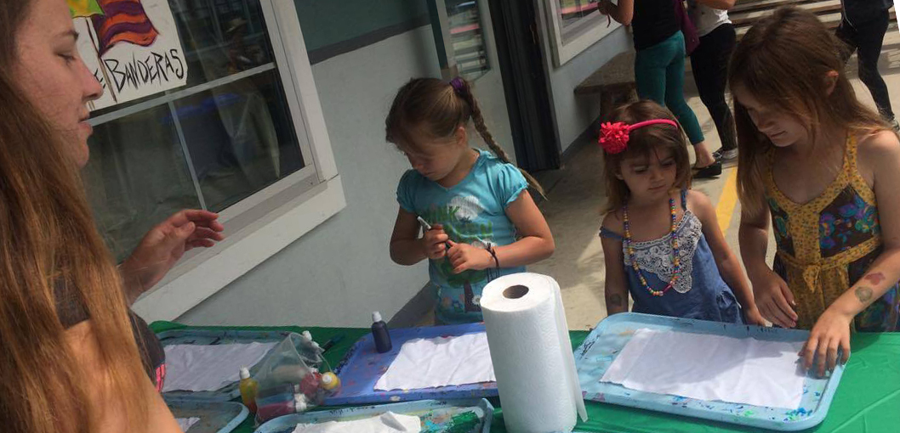

Teaching children critical life skills locally...
Here we are partaking in Bay View Elementary's Fiesta de los Artes in Santa Cruz! Embracing art is a powerful way to pass important messages about hygiene.
Here we are partaking in Bay View Elementary's Fiesta de los Artes in Santa Cruz! Embracing art is a powerful way to pass important messages about hygiene.
Here we are at an elementary school in Occupata, Peru passing the same important messages through art!